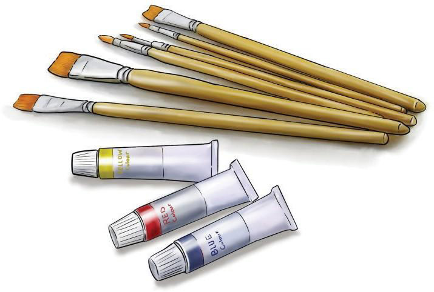

Figure 2.13: Brushes and colours

Activity 2.2
Use a variety of drawing tools, such as chalk, crayon and charcoal to draw a flower with four petals. Use different types of papers for each tool. Then:
- (a)Use a pen and ink to draw a picture of an orange.
- (b)Use a marker pen to draw a picture of a box.
- (c)Use crayon colours to paint a picture of an orange you have drawn.
- (d)Use a pencil to draw a picture of your school bag.
- (e)Use charcoal to paint the school bag you have drawn.
Exercise 2.2
1.
Drawings are created using a variety of tools. What are the useful tools applied when making tones to the drawing?
2.
Colour pencils and crayons are both coloured drawing materials. Explain how these tools differ in terms of appearance and use.